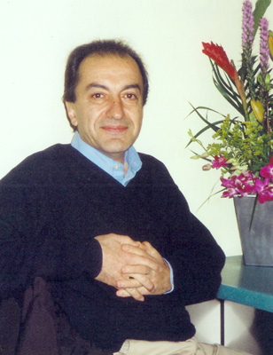

Ali Asgharzadeh Parsa (born 1951, Tehran, Iran)
Education
Alborz High-school, Tehran, Iran 1963-1970
AryaMehr University of Technology (now Sharif U. of Tech.), Tehran Iran 1970-1975
University of San Francisco, CA 1976-1977
San Jose State University, CA 1977-1978
Professional Experience
Computer Programmer
Scientific and Technical Applications Programmer/Analyst
Computer Graphics Programmer
Remote Sensing Software Specialist
Software Engineering Consultant and Manager
CEO of Simia Computer Graphics (computer animation)
Internet user since 1992
Computer Consultant (Internet Technologies)
Instructor at Sharif University of Technology, Fall 2006
Concurent Positions
Senior Member, Informatics Society of Iran
Member, Board of Trustees, Zirakzadeh Science Foundation
Publications
"The Enchanting Pen", about Computer Graphics. Published in Nashr-e Danesh.
"The Mythical Man-Month, Persian Translation", published in Computer Report.
"A review of the Persian translation of 'The Exact Sciences in Antiquity' in Jahan-e Ketab.
"Aren't You the Cat I Met in My Dreams?", about Lewis Carroll's Alice books. Published in Lawh Magazine (in Persian.)


Copyright © Ali Parsa 1998-2011
All rights reserved